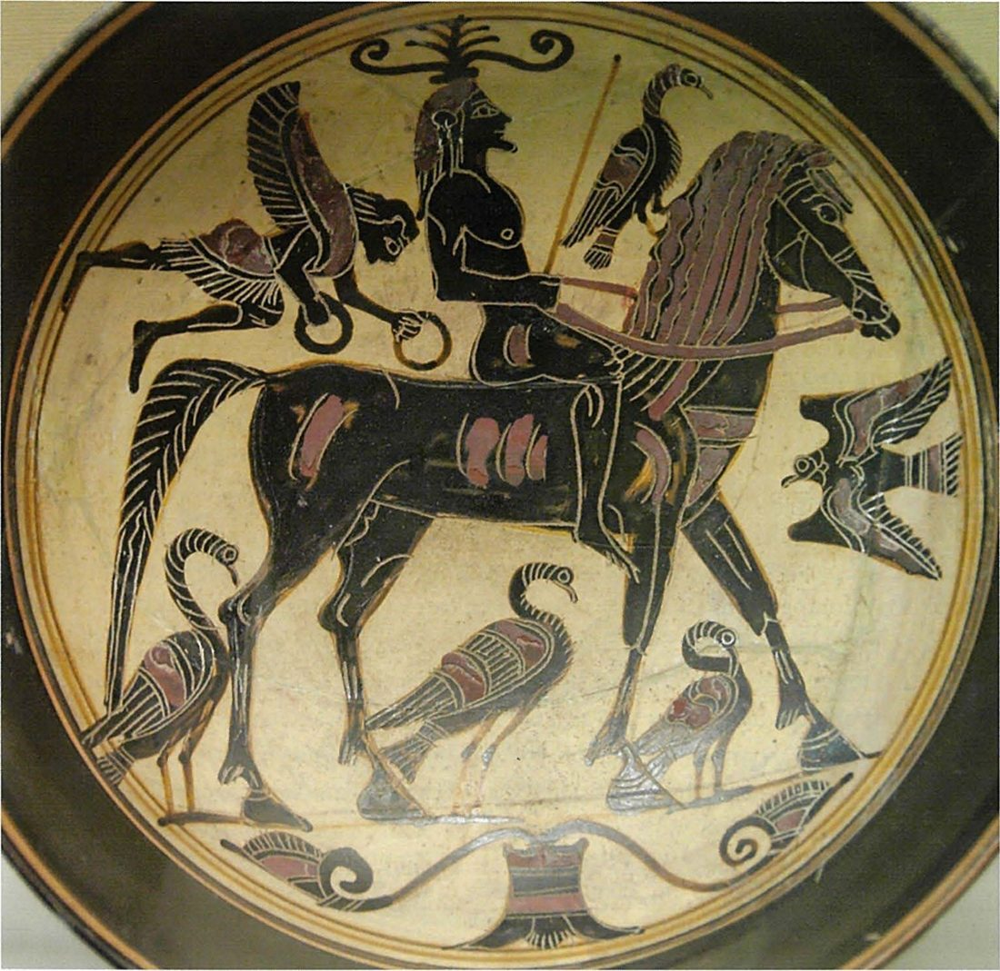
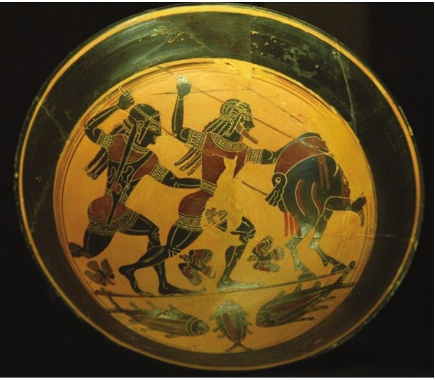
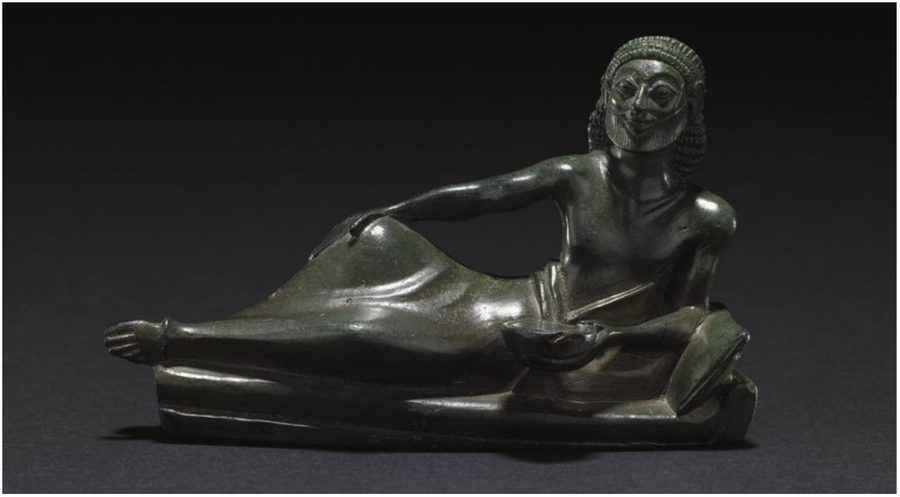

Spartan society to the Battle of Leuctra 371 BC · Lesson 26
Cultural and everyday life III: Tyrtaeus, Alcman and leisure
What do Sparta’s own poets — and Spartans at leisure — reveal about Spartan cultural life?
Year 12 Ancient History · Section II, Option G · Present with → or space · Read on a phone with R

Connect · 3 minutes · cold call
From what Spartans built to what they sang and played
Sparta’s finest buildings were its sanctuaries — the Amyklaion, the Menelaion and Artemis Orthia: modest temples, rich offerings, and claims to the heroic past.
What Spartans sang and how they spent their free time: two poets, and the evidence for athletics, horses, hunting, festivals and the messes.
- Lesson 1: the only early literary voices from inside Sparta
- Lesson 3: Tyrtaeus on the constitution from Delphi
- Lesson 11: Tyrtaeus on the man who falls in the front line
- Lesson 13: Alcman’s Maiden-song for a chorus of girls
- Lesson 19: what the Greek writers made of Sparta
New today: other lines from the poems, and a new question — what do they reveal about cultural life?
The key idea of Lesson 25, in one sentence.
Learning intentions and success criteria · 2 minutes
Today’s goals
- analyse what Spartan poetry reveals about Spartan values
- explain how Spartans spent their leisure and what that shows
- compare the purposes and audiences of Tyrtaeus and Alcman
- explain three leisure activities with evidence
- write an 8-mark HSC answer that uses a source
Cultural life: NESA’s 2020 marking guidelines say to “Interpret the term ‘culture’ broadly to include practices, beliefs, customs etc.” — poetry, music, festivals, sport, meals. Leisure: time free from work. Spartiates did no farming, crafts or trade; helots and perioikoi did that work (Lessons 8 and 17).
Note-making · today’s routine
How to structure your notes
questions and key terms
short phrases, arrows (→ led to), abbreviations (T. = Tyrtaeus, A. = Alcman)
- 1Listen and look firstDon’t copy while the slide is being explained.
- 2Write your own notes at each ✎ checkpointPhrases, not sentences. Arrows for cause and effect.
- 3Compare with the model notesThey appear one row at a time. Add what you missed in a second colour.
- 4Copy each cue question into the left columnLater, cover your notes and answer the cue questions from memory.
- 5Finish with a three-sentence summaryFive checkpoints: two Spartan voices · Tyrtaeus · Alcman · athletes and horses · hunting, festivals and the messes.
Key vocabulary
Words you will use today
| Poetry | Meaning |
|---|---|
| elegy | poetry in couplets, recited to the pipes; Tyrtaeus’ form |
| lyric | poetry sung to the lyre, often by a chorus; Alcman’s form |
| partheneion | a maiden-song for a chorus of girls to perform at a festival (plural partheneia) |
| chorus | a group who sang and danced together, usually at a festival |
| dialect | a regional form of Greek: Tyrtaeus wrote in Ionic, the dialect of Homer; Alcman in Doric, Sparta’s own |
| fragment | a surviving piece of a lost work: quoted by a later writer, or found on papyrus |
| Leisure | Meaning |
|---|---|
| stade race | a sprint of one stade (about 190 metres at Olympia) |
| kalpe | a horse race in which the rider ran beside a cantering horse, then mounted it |
| chariot race | at Olympia, a four-horse race in which the owner, not the driver, was crowned |
| stele | an inscribed stone slab, such as a list of an athlete’s victories |
| syssitia | the messes: compulsory common meals of the citizens (Lesson 12) |
| symposium | a drinking party, typical of elite life elsewhere in Greece; Archaic Laconian pottery “includes vessels for symposia” (Cavanagh) |
| mirage | the idealised, distorted image of Sparta created by writers |
Spelling: Cooley’s translations use Greek forms (Tyrtaios, Alkman, Lykourgos, Kyniska, Herakles). In your own writing use Tyrtaeus, Alcman, Lycurgus, Cynisca, Heracles.
1 · Two Spartan voices · I do — who they were, and the problem with poets
Two poets, two kinds of song
But both pose a variety of problems for the historians. Firstly, of course, they were writing poetry not history, whatever the original intentions or the purposes to which they were later put.
M. G. L. Cooley, Sparta, introduction to section A, “the evidence of poetry”
They are the only early Spartan literary voices, and both are only “probably Spartan” (Cooley). Inscriptions speak too: Damonon’s victory list and Cynisca’s epigram (section 4). Hodkinson: inscriptions give “the voices of a few, largely wealthy, women speaking in their own words”.
Elegy, “in traditional Ionic dialect (as used by Homer)”, performed for men. The Suda calls him “Lakonian or Milesian”; an Athenian orator claimed him for Athens.
Lyric, in Sparta’s own Doric dialect; his two longest surviving fragments were for girls’ choruses. He “lived perhaps one generation later than Tyrtaios, but wrote poetry different in all respects.” The Suda: “a Lakonian from Messoa”.
Both composed in the 7th century BC, before the outsiders who built the Spartan mirage, and their words were performed by Spartans.
1 · Two Spartan voices · We do — how Spartans used Tyrtaeus
Poetry in performance: a contest after dinner
The Lakonians themselves, too, in their wars march rhythmically while reciting the poems of Tyrtaios from memory. Philochoros says that after the Lakedaimonians had defeated the Messenians through the generalship of Tyrtaios they established the custom on their campaigns that, when they had finished their dinner and sung the Song of Thanksgiving, one by one they should sing the songs of Tyrtaios; and the Commanding Officer should be the judge and give a prize of meat to the winner.
Athenaeus, Scholars at Dinner 14.29 (Athenaeus flourished c. AD 200), citing Philochorus, an Athenian historian (c. 340–260 BC) · trans. in Cooley A2
What does this reveal about poetry in Spartan life?
Poems were memorised and performed: a singing contest after dinner, with a judge and a prize. Song, competition and campaigning went together.
How far can we trust it?
It reaches us through an Athenian historian, quoted some 850 years after Tyrtaeus by a writer who “does not offer historical criticism himself” (Cooley).
So what? For Spartans, Tyrtaeus was not a book but a performance — part of their leisure and their training at once.
Notes checkpoint 1 of 5
Two Spartan voices
Write your own notes first. Then compare, row by row, and add what you missed in a second colour.
2 · Tyrtaeus · We do — Source 13.4
Tyrtaeus on what makes a man worth remembering
I would neither mention nor have any regard for a man
For his prowess in running or wrestling,
Not even if he had the size and power of the Cyclopes,
And defeated Thrace’s North Wind in running;
Not if he were more handsome in stature than Tithonos,
And richer than Midas and Kinyras;
Not even if he were more kingly than Pelops, son of Tantalos,
And had the soft-tongued voice of Adrastos;
Nor even if he was renowned for everything except impetuous courage;
For a man is not good in war,
If he could not bear to see bloody slaughter
And lunge at his enemies close at hand.
Tyrtaeus, fragment 12, lines 1–12, quoted in Stobaeus, Anthology 4.10 (an anthology probably of the early 5th century AD) · composed mid-7th century BC by a poet who was probably Spartan · trans. K. Hughes · Cooley A9
Which qualities does he refuse to praise? Which are leisure activities?
Running and wrestling — athletics — first of all; then size, speed, good looks, wealth, royal rank and a persuasive voice.
Why list them only to reject them?
Each one is a famous rival claim to honour, named with a figure from myth. Rejecting them all lifts courage above every one.
What does he value instead?
“impetuous courage”: facing the slaughter and fighting the enemy “close at hand”.
2 · Tyrtaeus · I do — reading a poem as evidence for cultural life
What a refusal reveals
Nobody argues against something no one values. If Tyrtaeus had to rank courage above running, wrestling, looks and wealth, his listeners probably prized them all.
- Wrestling: Hipposthenes and his son won eleven Olympic victories at wrestling between them, from 632 BC (Eusebius and Pausanias, late sources, Cooley C44, C47).
- Running: “According to Eusebius’ list, Messenia and Sparta dominated the early stade races” (Cooley C39, a late chronicle).
| Ask | Model answer | |
|---|---|---|
| P | Why list athletic victory, beauty and wealth only to reject them? | To persuade: courage must outrank every other claim to fame. The poem is an argument, not a description. |
| R | Does the poem describe Spartan values, or argue for changing them? | It argues for an order of values — which suggests that athletic fame, looks and wealth already counted for a great deal. |
| L | Did the poem’s meaning change for later audiences? | Yes: Spartans later sang Tyrtaeus on campaign (A2); an Athenian orator quoted another of his poems (fr. 10) against a political opponent (A7); Stobaeus filed fr. 12 “on war” in an anthology to educate his son. |
So what? The poem is evidence for a culture that loved athletic fame — which Tyrtaeus wanted to put second to courage. His reward for courage is fame of another kind: “Never does his good fame perish nor his name” (line 31; Lesson 11).
2 · Tyrtaeus · We do — two writers, one idea If time
Honour in everyday life: the benches and the ball games
Everyone honours him, young and old alike:
He goes down to Hades only after many delights;
As he grows old he is pre-eminent among his citizens, and no one
Wants to cheat him of his respect or his rights,
But both the young and his peers and the elders,
All alike give up their place for him on the benches.
Tyrtaeus, fragment 12, lines 37–42 · mid-7th century BC · trans. K. Hughes · Cooley A9
[4] … But in Lakedaimon, everyone would be ashamed to share a meal with a coward in the same mess, or to wrestle with him at the gymnasium. [5] Often when sides are being picked for ball games, it is the coward who gets left out; in the choral competitions, he is pushed off to the most ignominious position in the line; in the street he must stand aside for others; when seated he must stand up even for his juniors; …
Xenophon, Constitution of the Lakedaimonians 9.4–5 · probably late 390s or 380s BC · an Athenian who knew Sparta well · trans. B. Wilson · Cooley D96
Where did Spartans make a man’s courage — or cowardice — visible?
In ordinary social life and leisure: seats on the benches, the mess, the gymnasium, ball games, the choruses, the street. Leisure was where honour was shown, won and lost.
Both writers present an ideal: a poet urging men to fight, and an admirer whose account Cooley says “probably depicts a somewhat idealised Sparta”. Whether every coward was treated like this, we cannot tell.
Notes checkpoint 2 of 5
Tyrtaeus as evidence for cultural life
3 · Alcman · We do — Source 13.5 · pairs
Alcman: a dance for the Muse and a prayer for marriage
Come, Muse, Kalliope, daughter of Zeus,
Begin the lovely words; set desire on the song,
And make the dance graceful.
Alcman, fragment 7, quoted in Hephaestion, Handbook on Metres 7.4 · late 7th century BC · trans. K. Hughes · Cooley A18
… I went up from Trygeai
To the lovely precinct of the White Goddesses
With two sweet pomegranates.
The girls, when they had prayed
To the fair-flowing river to ensure
Lovely marriage, and to experience
What is dearest to men and women,
A lawful marriage-bed.
Alcman, fragment 4A (Oxyrhynchus papyri 2443 and 3213, from Egypt) · late 7th century BC · trans. K. Hughes · Cooley A17
Origin: one extract survives in a later handbook on metres, the other on papyrus. What does that suggest?
Only scraps survive, by chance: a later handbook on metres quoted three lines as an example. Most of Alcman’s “six books” are lost.
Purpose: who heard songs like these?
Probably festival crowds: a chorus sang and danced in public at religious ceremonies, calling on the Muse for song and dance together.
Value: what did the girls hope for, and how did they seek it?
“Lovely marriage”: they prayed to a river, and the singer brought offerings to a sacred precinct.
Reliability: who were the “White Goddesses”?
We do not know, and Cooley adds no note. Say what the words show; admit what they cannot.
3 · Alcman · I do — more lines from Alcman If time
Songs for the gods — and a racehorse
A strong prize-winner with thundering hooves
That one dreams about from the shade of a cave.
Why, don’t you see? The racehorse is
Venetian; …
And the next in beauty after Agido
Will be a Scythian horse up against an Ibenian;
Alcman, fragment 1, lines 48–51 and 58–59 (Louvre Papyrus E3320) · trans. K. Hughes · Cooley A14
Kastor – skilled horsemen, tamers of
Swift horses – and glorious Polydeukes.
May our chorus please Zeus’ house and you too, Lord (Apollo).
Alcman, fragment 2, from a papyrus (Cooley A15), and fragment 45 (Cooley A19) · late 7th century BC · trans. K. Hughes
What does the racehorse comparison suggest about the audience?
The image works for listeners who admired fine, prize-winning horses — perhaps an early sign of the horse-racing Sparta later excelled at (section 4).
The songs honour the gods and Sparta’s own heroes, the Dioscuri. Cooley: praise for them “would be a natural subject for a choir at a Spartan religious festival”.
Cooley: the two longest fragments were for girls’ choruses, but “Other fragments suggest a considerable range to his poetry.”
Cooley: “Music, poetry and dance were important aspects of Spartan cultural life, especially as part of festivals.”
3 · Alcman · I do — comparing the poets
Two Spartan voices, side by side
| Tyrtaeus | Alcman | |
|---|---|---|
| When | mid-7th century BC | late 7th century BC, “perhaps one generation later than Tyrtaios” |
| Spartan? | “probably Spartan”; the Suda: “Lakonian or Milesian”; an Athenian orator claimed him for Athens | “probably Spartan”; the Suda: “a Lakonian from Messoa”; Crates said Sardis |
| Form and dialect | elegy, recited to the pipes; Ionic, the dialect of Homer | lyric, sung to the lyre, often by a chorus; Doric, Sparta’s own |
| Performers and audience | men: soldiers after dinner on campaign and in the king’s tent; boys learnt marching songs (‘Songs-in-Arms’) by heart Cooley A2, A7 | choruses, especially of girls, at festivals Cooley A14, A17, A18 |
| Values | courage, standing firm, fame; honour for the brave | beauty, rivalry, piety, marriage, luxury |
| How it survives | quotations by later writers (e.g. Stobaeus, Plutarch, Strabo, Pausanias); a few papyri | papyri from Egypt; quotations (e.g. a handbook on metres) |
| Best evidence for | the ideals Spartans were taught to admire | festivals, choruses and the training and display of girls |
Together they show a Sparta of song, dance, ritual and display as well as war. Cooley sets “the war poems of Tyrtaios which seem such a perfect fit for the Spartan stereotype” beside Alcman, who “invented the genre of choral songs for performances of girls or young women”.
Check for understanding · gesture vote · hold up 1–4 fingers
Which of these is not a difference between Tyrtaeus and Alcman?
- 1The dialect they composed in
- 2Who performed their songs
- 3Which of the two was certainly a Spartan
- 4The kind of poetry: elegy or lyric
Neither was certainly Spartan: Cooley calls both “probably Spartan”. The other three are real differences.
Notes checkpoint 3 of 5
Alcman, and the two poets compared
4 · Athletes and horses · I do — a life of leisure
Citizens with time to spare
The Spartan way of life offered all crucial aspects of a Greek élite lifestyle: landed property, leisure (no need to work for a living); a life dedicated to leisure pursuits, namely socializing, politics, exercise and hunting; and active contribution to the city’s defence.
M. G. L. Cooley, Sparta, introduction to wealth and property (D52–D59)
Cooley’s verdict: “we should regard the Spartan lifestyle as comfortable prosperity masked by a display of austerity.”
Thucydides: “The Lakedaimonians were the first to strip naked, to take off their clothes in public and rub themselves with oil after exercising.” (1.6.5, Cooley C42)
Hodkinson: in Spartan territory, “these sporting dedications are far more numerous than the small number of inscribed dedications with military associations” — such as jumping weights and a discus inscribed by athletes (C80–C82).
Festivals across Laconia and Messenia held races on foot and on horseback. One rich man recorded every win he could — next slide.
4 · Athletes and horses · We do — Source 13.6
The Damonon stele: a rich man’s victory list
[1] Damonon put this up for Athena, guardian of the city, having won the following competitions, which none of the current generation has done. …
[18] And at the Poseidon’s Games at Thouria, Damonon won eight times, holding the reins himself, in the kalpe, with horses bred from his own mares and his own stallion …
[66] When Echemenes was ephor, Damonon won the following victories: at Athena’s Games, in the kalpe, holding the reins himself, and in the horse-race, together on the same day, and his son also won the stade race.
Inscribed stele, 0.94 m high, with a relief of a four-horse chariot, set up on the Spartan acropolis · c. 400 BC (approximate; Cooley dates it “400 BC?”) · IG V 1, 213 · trans. in Cooley C83
Origin and purpose: Damonon paid for this. Who could compete — and why stress his own mares and stallion?
Only the rich: it shows off “the resources and considerable land-holding necessary for breeding, training and maintaining racing horses” (Cooley).
Value: what kinds of contest and festival does it record?
Chariot, kalpe and horse races, and foot races won by Damonon as a boy and by his son, at games across Laconia and Messenia: “a flourishing local circuit of minor games”.
Reliability: why is it hard to date?
Its ephors are not in Xenophon’s list for the Peloponnesian War years, so it is from before 431 or after 404 BC — Cooley cannot be certain which, though about 400 BC “would perfectly fit”.
Limitations: does one rich family show how ordinary Spartiates spent their leisure?
No: it shows what the wealthy could do — and wanted seen.
4 · Athletes and horses · I do — Sparta’s best event
Horses and chariots: wealth on show
after early dominance in the stade race, Sparta’s best event, especially in the fifth century, is the one for which, in any age, great wealth is a prerequisite – horse-racing – or in an Olympic context, the four-horse chariot race, for which the owner, not the charioteer, was crowned.
M. G. L. Cooley, Sparta, introduction to the Olympic Games (C39–C60)
Of 18 monuments known at Olympia for four-horse chariot victories between 560 and 364 BC, 11 were for Spartans (Cooley C54, after Hodkinson).
I say that I am the only woman
Out of all Greece to win the crown.
Epigram on the base of Cynisca’s statue, 396 or 392 BC · IG 5.1.1564a · trans. in Cooley C55
… but persuaded his sister Kyniska to breed chariot horses, and showed by her victory that such a stud is a mark not of manliness but of wealth.
Xenophon, Agesilaos 9.6 · Xenophon (c. 430–c. 350 BC), who fought under King Agesilaus · trans. in Cooley C57
Why was chariot-racing a sign of wealth rather than military skill?
The owner was crowned, not the driver; breeding, training and statues cost a fortune — and a woman could win. Xenophon himself says so.
Notes checkpoint 4 of 5
Athletes, horses and the Damonon stele
5 · Hunting, festivals and the messes · We do — two sources on hunting
Hunting: the most honourable activity?
But for such as these Lykourgos established hunting as the most honourable activity, unless prevented by official obligations. His purpose was to ensure that they could still endure the demands of military service just as well as the young men (hebontes).
Xenophon, Constitution of the Lakedaimonians 4.7 · probably late 390s or 380s BC · trans. B. Wilson · Cooley D79
And the cooks always announce who has provided something, so that everyone might know his love of hunting and his eagerness on their behalf.
Molpis, a Laconian writer “probably of the Hellenistic period”, quoted in Athenaeus, Scholars at Dinner 4.19 · trans. in Cooley E77
What two reasons for hunting do these give?
Fitness for war (Xenophon) — and honour: game shared at the mess, with the hunter named in front of everyone (Molpis).

Cooley on Molpis and the other mess writers: “Since none of these accounts is from the classical period, we cannot be sure whether they describe practices continued from classical times or later changes”.
5 · Hunting, festivals and the messes · We do — leisure in public, and leisure under control
Festivals and the messes: pleasure — and control
- At the Hyakinthia, boys played the lyre, young men’s choruses sang, and “The whole city is at a pitch of excitement and pleasure at the spectacle” (Polycrates, date unknown, in Athenaeus, Cooley C69).
- At the Gymnopaedia, choruses of boys and men danced, “singing songs by Thaletas and Alkman” (Sosibius, a later Laconian writer, in Athenaeus, Cooley C75): Alcman lived on in performance.
- Xenophon: Lycurgus “put a stop to the custom of compulsory drinking”; each man drank when he was thirsty (Constitution 5.4, Cooley D61).
- The talk turned to “the great achievements of the state’s heroes” (5.6).
Which sounds like leisure for its own sake — and which like leisure kept in order?
Festivals: public celebration and worship, where poetry was performed. The messes: sociable but controlled. Cooley: they “formed an alternative to the symposion (‘drinking-together’) culture found elsewhere in Greece”.

Cooley: it “need not, of course, show any individual diner, let alone a Spartiate one, since it could equally well have been made for external consumption.”
5 · Hunting, festivals and the messes · I do — a textbook diagram, checked against the evidence
Spartan leisure: what the evidence supports
5 · Hunting, festivals and the messes · Check for understanding · gesture vote, then the evidence
“Spartan leisure was training for war.” Agree?
Thumbs up = agree · sideways = partly · thumbs down = disagree. Be ready to name one source.
- Xenophon: hunting kept older men able to “endure the demands of military service” (D79).
- The kalpe: a skill “very relevant to Greek cavalry fighting” (Cooley, following Christesen, C83).
- Cooley: “their preferred leisure activities (exercise, hunting) could be considered as further preparation for war.”
- Chariot-racing trained no hoplite: “a mark not of manliness but of wealth” (Xenophon, C57).
- Hodkinson: sporting dedications “far more numerous” than military ones.
- Festivals: a city “at a pitch of excitement and pleasure” (C69); Alcman’s choruses sang of beauty and marriage.
A balanced judgement: some leisure prepared men for war; much of it was enjoyment, worship and competition for status.
Notes checkpoint 5 of 5
Hunting, festivals and the messes
Finish your notes
Summary: three sentences
- What do Tyrtaeus and Alcman reveal about Spartan values?
- How did Spartiates spend their leisure, and what evidence shows it?
- Was leisure at Sparta training for war?
Tyrtaeus and Alcman, probably Spartan poets of the 7th century BC, show a culture that probably prized athletic fame, beauty and wealth: Tyrtaeus urged men to put courage first, while Alcman’s songs for girls’ choruses joined music, dance, religion and marriage. Free from farming and trade, Spartiates spent their leisure on exercise, horse- and chariot-racing, hunting, festivals and the messes, as Damonon’s victory list, the Olympic monuments and Xenophon show. Some of it, such as hunting, kept men fit for war, but much was celebration and competition for status — which the image of a purely military Sparta leaves out.
6 · Answering HSC questions
An 8-mark question with a source: HSC 2020
25 marks, about 45 minutes — about 1.8 minutes a mark. 8 marks ≈ 14 minutes, about 250–350 words.
The source is printed on the paper. The top band “Makes detailed reference to evidence from the source provided”.
Tyrtaeus and Alcman count too: Sparta’s own poets, both probably Spartan.
We take the question and Source L apart together, you write for 14 minutes, then mark your own against the criteria and an annotated model.
HSC 2020 · Section II · Question 11 (b) · 8 marks
With reference to Source L, what do Greek writers reveal about Spartan cultural life in this period?
We do — read Source L, take the question apart, then write it yourself.
HSC 2020 Q11(b) · Source L, beside Cooley’s translation of how the passage ends and continues
Source L is Pausanias — a writer of the Roman period
And there is a place called Platanistas . . . where it is customary for the youths to fight, [and it] is surrounded by a moat . . . you enter it by bridges. On each of the two bridges stand images; on one side an image of Heracles, on the other a likeness of Lycurgus. Among the laws Lycurgus laid down for the constitution are those regulating the fighting of the youths.
Source L : Extract from Pausanias 3.14.8 · trans. W. H. S. Jones and H. A. Ormerod (Loeb Classical Library, 1926), as printed on the 2020 HSC paper · © NESA
Lykourgos set in place laws regarding the constitution but also for the fighting of the ephebes … on the following day, a little before midday, they enter the aforementioned place by bridges. Lots drawn during the night predetermine the route by which each side enters. They fight with fists, kick with their feet, bite, and gouge opponents’ eyes. I have just described the way they fight man to man: but they also charge at each other violently in a group and push each other into the water.
Pausanias, Description of Greece 3.14.9–10 · written in the 2nd century AD · trans. in Cooley D81
When? Pausanias wrote in the 2nd century AD. Cooley: “little of the information provided can be firmly linked to the classical period, offering instead a detailed insight into perceptions of Sparta in the Roman period.”
What it reveals: contests of the young as an established public custom, credited to Lycurgus and set between images of Heracles and the lawgiver. Cooley warns that Spartan education “underwent extensive ‘reconstruction’ work in the Hellenistic and Roman periods”.
HSC 2020 Q11(b) · We do — deconstruct the question
What the question is really asking
Not a NESA key word, so read the criteria: the top band “Presents a well-developed explanation”. Say what each writer shows and how far to trust him.
Use it in detail — the Platanistas, the youths’ fights, Heracles and Lycurgus — and weigh it: a 2nd-century AD writer.
Name writers of different periods. “Culture” broadly — poetry, music, festivals, contests, leisure, marriage, religion — but cultural life: the army only as values and customs (as NESA’s list does), not campaigns or government.
Down to 371 BC. Later writers (Pausanias, Plutarch) can be used, but say when they wrote.
About 14 minutes · Source L plus three or four other named writers · each linked to something it reveals · one judgement on reliability · no introduction that lists what you will do.
HSC 2020 Q11(b) · the marking guidelines and the markers’ feedback
What the markers rewarded
| Marks | Criteria |
|---|---|
| 7–8 | Presents a well-developed explanation, demonstrating accurate and detailed knowledge and understanding relevant to the question · Makes detailed reference to evidence from the source provided · Communicates ideas and information coherently, using appropriate historical terms and concepts |
| 5–6 | Presents a sound explanation including accurate knowledge and understanding relevant to the question · Uses evidence from the source provided · Communicates ideas and information clearly, using appropriate historical terms and concepts |
| 3–4 | Presents limited explanation relevant to the question · May refer to evidence from the source provided · Communicates ideas using some historical terms and/or concepts |
| 1–2 | Makes general statement/s relevant to the question · May refer to the source provided |
refer in detail to specific features of cultural life such as, art, architecture, writing, leisure, marriage, as well as other activities relevant to culture such as religion, rather than society more generally (b)draw out different revelations about culture from a range of relevant Greek writers of different periods (b)
making a clear link between the Greek writers and their evidence about cultural life (b)integrating sources as evidence rather than relying solely on unsupported knowledge and understanding (b, c)
Source: NESA, 2020 HSC Ancient History Marking Guidelines (Section II, part (b)) and the 2020 marking feedback for Question 11.
HSC 2020 Q11(b) · NESA’s “answers could include”, checked against Cooley
What the marking guidelines listed — and what Cooley says
Answers could include, Option G: NESA 2020 HSC Ancient History Marking Guidelines, Section II part (b) · all six points, with NESA’s spelling “Pausanius” · NESA published no sample answer for this part
Cooley says
Even sharper: the feedback names “writing” and “leisure”: Alcman’s choruses, Tyrtaeus’ songs, the Damonon stele and the Olympic victors are all cultural evidence.
HSC 2020 Q11(b) · We do — a plan: writer, what it reveals, how far to trust it
Four writers, three periods, one line of explanation
| Writer | What it reveals about cultural life | How far to trust it |
|---|---|---|
| Pausanias (Source L)2nd century AD | contests of the young at the Platanistas, credited to Lycurgus, between images of Heracles and the lawgiver | detailed, but Roman-period: “perceptions of Sparta in the Roman period” |
| Xenophonprobably late 390s or 380s BC | rivalry as Lycurgus’ method: the competition that makes “the best choruses” and “the most spectacular athletic contests” turned to courage among the young men; hunting; the messes | knew Sparta well, but “a somewhat idealised Sparta” (Cooley) |
| Tyrtaeusmid-7th century BC | athletic fame prized, but courage put first; songs sung for a prize after dinner | probably from inside Sparta, early, but poetry meant to persuade |
| Alcmanlate 7th century BC | girls’ choruses at festivals: song, dance, offerings, prayers for marriage | probably from inside Sparta, early, but fragments |
| Judgement: a culture of public contest and performance serving the city’s ideals — and the later the writer, the more it appears as Lycurgus’ design. | ||
HSC 2020 Q11(b) · You do · 14 minutes · press K for the timer
With reference to Source L, what do Greek writers reveal about Spartan cultural life in this period? (8 marks)
- a judgement in your first sentence — no list of what you will do
- Source L used in detail, and dated
- three or four other named writers, from different periods
- cultural life: poetry, festivals, contests, leisure, marriage
- one sentence weighing how far to trust the writers
- about 250–350 words
Start: “Greek writers reveal that Spartan cultural life centred on public contests and performances, but …”
Foundation: use the plan table and the comparison table. Extension: add a second judgement on the mirage.
HSC 2020 Q11(b) · annotated model · paragraph 1 of 2
Answer first, then Source L in detail
Model written for this lesson · paragraph 1 of 2
Marker’s margin
HSC 2020 Q11(b) · annotated model · paragraph 2 of 2
Then Sparta’s own poets — and a judgement
Model written for this lesson · both paragraphs ≈ 350 words, about 14 minutes
Marker’s margin
HSC 2020 Q11(b) · three answers that fall short
Why answers drop marks
Source L says there was a place called the Platanistas where youths fought. It had a moat and two bridges with images of Heracles and Lycurgus, and Lycurgus made laws about the fighting.
A paraphrase of the source, with no other writers and no explanation of what it reveals — “limited explanation”.
Greek writers reveal that Sparta was a military society. Source L shows youths fighting under Lycurgus’ laws; Xenophon describes the call-up of the army, Thucydides the battle of Mantinea, and Plutarch the krypteia …
Sound, evidenced and uses Source L, but about the army and society in general. Better responses, the 2020 feedback says, referred in detail to “specific features of cultural life”.
Source L proves that in the 5th century BC Spartan youths fought at the Platanistas under Lycurgus’ laws.
Pausanias describes his own day, in the 2nd century AD, and Lycurgus may never have existed (Lesson 3).
Written for this lesson to show the marking criteria — not real student answers. The bands are our estimate, not NESA’s.
HSC 2020 Q11(b) · Self-mark
Mark your own answer
Fewer than five ticks? Add the missing move in a second colour.
7–8 marks needs “detailed reference to evidence from the source provided”. Underline every detail you took from Source L. As a rule of thumb (ours, not NESA’s), one or two details is closer to “uses evidence” (5–6) than to “detailed reference” (7–8).
With reference to Alcman, fragment 7 (Cooley A18), what does Spartan poetry reveal about cultural life in this period? (6 marks)
Explain the importance of leisure activities for Spartan society in this period. (6 marks)
Practice and review · 1 of 6 · sequencing
Put these in order, earliest first, with a date for each
- APausanias describes the youths fighting at the Platanistas
- BTyrtaeus composes a poem refusing to honour men for running or wrestling
- CCynisca wins the four-horse chariot race at Olympia
- DAlcman composes songs for girls’ choruses
- ELichas is whipped at Olympia for crowning his charioteer
- FEvagoras’ mares win three Olympic chariot races
- GPlutarch writes his Life of Lycurgus
- B Tyrtaeus — mid-7th century BC (fr. 12, Cooley A9)
- D Alcman — late 7th century BC, “perhaps one generation later”
- F Evagoras — “probably in the mid-sixth century” (Cooley, note on C50)
- E Lichas — 420 BC (Thucydides 5.50.4, Cooley C53)
- C Cynisca — 396 or 392 BC (Cooley C55)
- G Plutarch — c. AD 100
- A Pausanias — 2nd century AD (Cooley D81)
Practice and review · 2 of 6 · true, false, justify · Activity B items 4 and 5, and six more
True or false? Justify with a source
- 1Tyrtaeus says a winner at running or wrestling deserves to be remembered. False — “I would neither mention nor have any regard for a man / For his prowess in running or wrestling” (fr. 12, Cooley A9).
- 2The Damonon stele records victories in both horse races and foot races. True — the kalpe, the horse-race and chariot wins, and the stade and two-stade races won by Damonon as a boy and by his son (Cooley C83).
- 3Tyrtaeus and Alcman both composed in Sparta’s Doric dialect. False — Tyrtaeus wrote “in traditional Ionic dialect (as used by Homer)”; Alcman in Doric (Cooley, section A introduction).
- 4Xenophon says Lycurgus made hunting the most honourable activity for men past their youth. True — “Lykourgos established hunting as the most honourable activity” (Constitution 4.7, Cooley D79).
- 5In the Olympic four-horse chariot race the driver, not the owner, was crowned. False — Cooley: “the owner, not the charioteer, was crowned”, which is how Cynisca could win.
- 6Cynisca’s epigram claims she was the only woman in Greece to win the crown. True — “I say that I am the only woman / Out of all Greece to win the crown.” (Cooley C55)
- 7Hodkinson says inscribed dedications with military associations outnumber sporting ones. False — “these sporting dedications are far more numerous than the small number of inscribed dedications with military associations”.
- 8Xenophon says compulsory drinking was the custom at the Spartan messes. False — “He put a stop to the custom of compulsory drinking” (Constitution 5.4, Cooley D61).
Practice and review · 3 of 6 · cloze · Activity C items 5–7, and five more
Fill the gaps
- Alcman wrote in Sparta’s own dialect, called Doric.
- The race in which the rider ran beside a cantering horse, then mounted it, was the kalpe.
- Xenophon says that for older men the most honourable activity was hunting.
- Tyrtaeus composed his elegies in the Ionic dialect used by Homer.
- A maiden-song for a chorus of girls is called a partheneion.
- Damonon set up his stele for the goddess Athena, “guardian of the city”.
- A sprint of about 190 metres at Olympia was the stade race.
- At Olympia, Cynisca was the first woman to win the four-horse chariot race.
Practice and review · 4 of 6 · write an analytical paragraph · question written for this lesson
How useful are Tyrtaeus and Alcman as evidence for Spartan cultural life?
Tyrtaeus and Alcman are highly useful for Spartan cultural life, though more for its values and performances than for its daily routine. As probably Spartan poets of the 7th century BC, they are the only surviving literary voices from inside Sparta before the Hellenistic period, composed long before outsiders built the mirage. Tyrtaeus will not honour a man ‘For his prowess in running or wrestling’, while Alcman asks the Muse to ‘make the dance graceful’ and records girls praying ‘To the fair-flowing river’ for marriage. Together they show a culture in which athletic fame, choral song and religious ritual mattered enough to be argued about and performed in public. Their limits are as clear: they were ‘writing poetry not history’, as Cooley says, for particular occasions, and they survive only as fragments, so they cannot show how often festivals were held or who could afford to compete. They are therefore best read beside inscriptions from Sparta itself, such as Damonon’s victory list of about 400 BC, as Sparta’s own picture of what it admired.
Practice and review · 5 of 6 · extended response · HSC-style, written for this lesson
“Leisure at Sparta was training for war.” To what extent do the sources support this view? (12 marks)
Use evidence from relevant sources. Plan it in four moves:
- Thesis in your first sentence — for example, only partly: some leisure kept men fit for war, but much of it was worship, celebration and competition for status.
- The case for: Xenophon on hunting (D79) and on the coward shut out of games and choruses (D96); the kalpe and cavalry (C83); Tyrtaeus putting courage above athletics (A9); Cooley’s view that exercise and hunting “could be considered as further preparation for war”.
- The case against: chariot-racing as “a mark not of manliness but of wealth” (C57) and Sparta’s Olympic monuments (C54); Hodkinson on sporting dedications; the Hyakinthia (C69); Alcman’s choruses (A17, A18).
- Weigh the sources: Xenophon’s idealised Sparta; late writers such as Molpis (E77) and Pausanias; the poets’ purposes; one rich family on the Damonon stele.
Practice and review · 6 of 6 · the Quick Checks for sections 4 and 5, with answers written for this lesson
Quick Check review
- Why are Tyrtaeus and Alcman possibly our only reliable literary evidence for Sparta? They are the only surviving literary sources from inside Sparta before the Hellenistic period (both probably Spartan), from the 7th century BC; the classical writers were outsiders, and later Laconian writers such as Molpis wrote centuries later.
- Which activities does Tyrtaeus refuse to praise, and what does he value instead? Running and wrestling, size and speed, beauty, wealth, kingly rank and a persuasive voice; he values “impetuous courage” in close fighting (fr. 12, A9).
- Give two differences between Tyrtaeus and Alcman. Elegy in Ionic v. lyric in Doric; men on campaign v. girls’ choruses at festivals; courage and fame v. beauty, piety and marriage.
- What does the Damonon stele reveal about local games? “a flourishing local circuit of minor games” across Laconia and Messenia, with chariot, kalpe, horse and foot races — and the wealth needed to breed racehorses (C83).
- Why was chariot-racing a sign of wealth rather than military skill? The owner, not the driver, was crowned; the horses and statues were costly; Xenophon calls Cynisca’s win proof that a stud is “a mark not of manliness but of wealth” (C57).
- Why must the bronze banqueter be used with caution? It was probably made in Laconia but thought to have been found at Dodona, and Cooley says it “need not … show any individual diner, let alone a Spartiate one” (E71).
- Give one piece of evidence that leisure prepared Spartans for war, and one that it did not. For: Xenophon says hunting kept older men fit for service (D79). Against: chariot-racing showed wealth, not manliness (C57); sporting dedications far outnumber military ones (Hodkinson).
Exit ticket · before you leave
Two values, one judgement
One value in Tyrtaeus, and one value in Alcman — with a word or two from each.
Was hunting at Sparta leisure, or training for war? One sentence, with a source.
Next lesson: Cultural and everyday life IV — marriage customs and the mirage.
Sources and credits
Where everything comes from
Quoted from the translations in M. G. L. Cooley (ed.), Sparta, LACTOR Sourcebooks in Ancient History 21, 2nd edn (Cambridge University Press, 2023): Tyrtaeus, fr. 12 (A9, trans. K. Hughes); Alcman, frs 1, 2, 4A, 7 and 45 (A14, A15, A17, A18, A19, trans. K. Hughes); Philochorus in Athenaeus, Scholars at Dinner 14.29 (A2); Lycurgus of Athens, Against Leokrates 106–7 (A7); the Suda on Tyrtaeus and Alcman (A1, A13); Xenophon, Constitution of the Lakedaimonians 4.2, 4.7, 5.3–6 and 9.4–5 (D79, D61, D96, trans. B. Wilson), Agesilaos 2.17 and 9.6 (C71, C57) and Hellenika 4.5.11 (C70); Strabo, Geography 8.4.10 (A12); Philostratus, On Athletic Training 9–10 (C60); Thucydides 1.6.5 and 5.50.4 (C42, C53, trans. B. Wilson); Herodotus 6.103.3–4 (C50); Pausanias, Description of Greece 3.13.9, 3.14.9–10 and 3.15.1 (C47, D81, C56); Polycrates in Athenaeus 4.17 (C69); Molpis in Athenaeus 4.19 (E77); Sosibius in Athenaeus 15.22 (C75); Plutarch, Lykourgos 21.2 (D97); Eusebius’ Olympic victor lists (C39, C44); the Damonon stele, IG V 1, 213 (C83); Cynisca’s epigram (C55); jumping weights and a discus (C80–C82); bronze banqueter, BM 1954,1018.1 (E71). Cooley’s introductions to the literary sources, to section A and to Alcman (A13–A20), to the Olympic Games and the festivals, to wealth and property, to the common meals, to education and to the army, to women and girls (D64–D72), and his notes on A7, A8, A15, C39, C49, C50, C52, C54, C60, C69, C75, C83, E71 and E77; S. Hodkinson, ‘Introduction to the Epigraphy of Lakonia and Messenia’, and W. G. Cavanagh, ‘Introduction to Lakonian Archaeology’, both in Cooley.
- Inside a black-figure cup of c. 550–530 BC: a rider on horseback, with winged figures and birds around him. Clarke & Garner call him a Spartan; the winged figures suggest more than an everyday ride — Clarke & Garner, Fig 8.9
- Inside a Laconian black-figure cup: two long-haired hunters with raised spears attack a large animal, probably a boar, with birds between their legs and fish below. Bradley calls them Spartans but gives no date or museum; it may show a hunt from myth — Bradley, Fig 3.31
- Bronze reclining banqueter from the support of a bronze bowl, probably made in Laconia, c. 530–500 BC, thought to have been found at Dodona (BM 1954,1018.1; Cooley E71) — Bradley, Fig 3.32
Books: Clarke & Garner, Spartan society textbook (school copy); P. Bradley, The Ancient World Transformed (Cambridge University Press, 2014).
Textbook images are reproduced for teaching, with the source given under each one. The leisure tree was drawn for this lesson from Hurley et al., Antiquity 2 (4th edn, Oxford University Press, 2019), Source 60, with the evidence from Cooley; the comparison table was drawn for it from Cooley.
HSC 2020 Question 11 (b) and Source L (Pausanias 3.14.8, trans. W. H. S. Jones and H. A. Ormerod, Loeb Classical Library, 1926), the 2020 part (b) marking criteria, “answers could include” and marking feedback: NSW Education Standards Authority, 2020 HSC Ancient History examination, marking guidelines and feedback. © NESA. NESA glossary of key words. The HSC-style questions were written for this lesson.